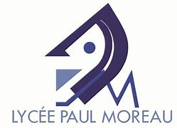
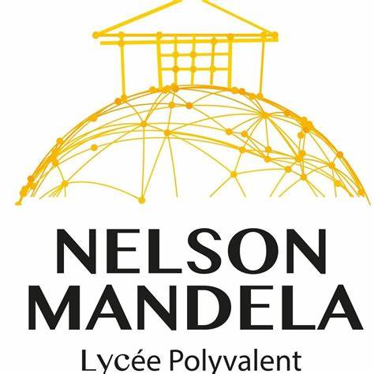
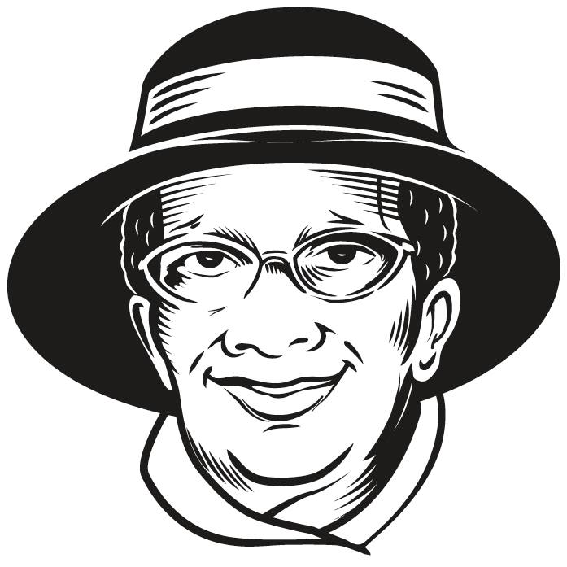
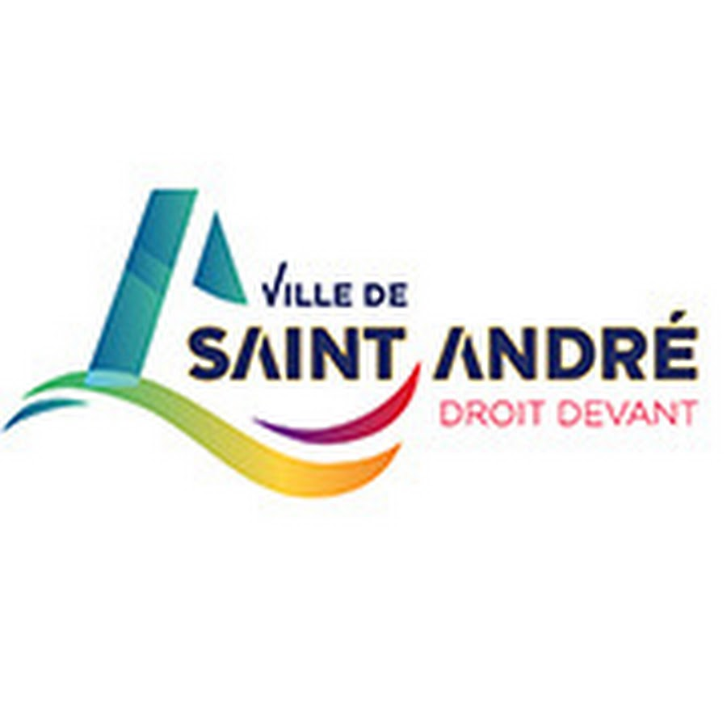
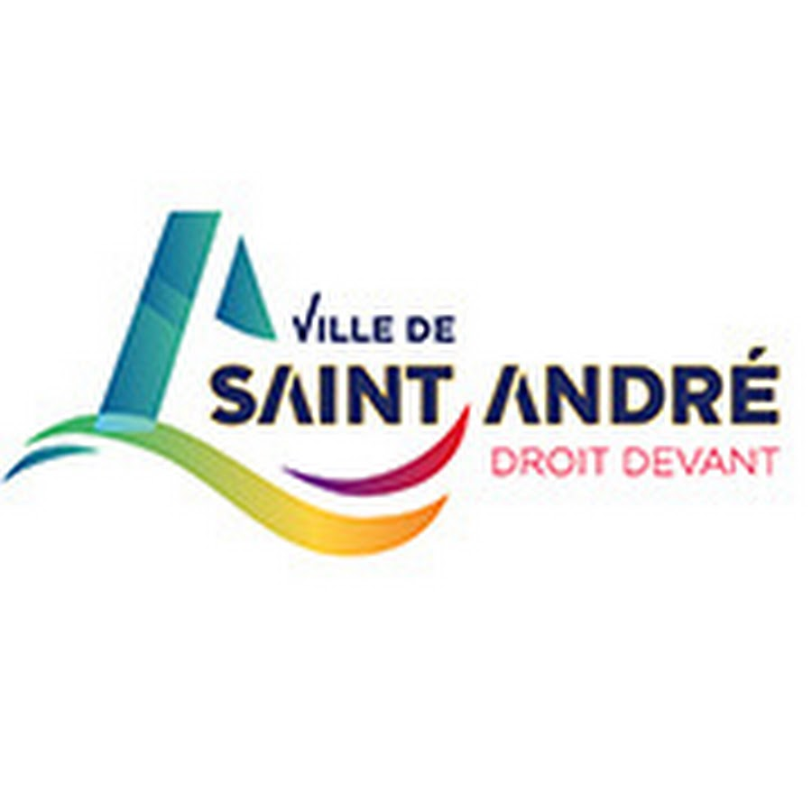

À propos de moi
Je suis YANCOUB AHMED Yasmina, actuellement etudiante, déléguée du conseil de la vie lycéenne, déléguée titulaire et membre du conseil d'administration au lycée Nelson Mandela, Bras Fusil à Saint-Benoit en 2ème année de BTS SIO (Service Informatique aux Organisations) en option SLAM (Solutions Logiciels Applications Métier), spécialisée dans le developpement. Avant d'être dans cette formation, j'ai obtenu mon bac STI2D (Science Technologie du developpement Durable) au lycée Paul Moreau à Bras Panon. Cela fait 1 an maintenant que je travaille dans un restaurant qu se situe à Salazie, La Villa Marthe située à Hell - Bourg.
Du 05/06/2023 au 30/06/2023, j'ai effectuée mon stage à la mairie de Saint-Benoît, Du 15/01/2024 au 23/02/2024 j'ai fait mon stage de deuxieme année à la mairie de Saint Andre et en troisième année j'ai également fait mon stage au sein de la collectivité de Saint André. Mon projet pour la suite n'est pas à son terme final mais je compte bien le concrétiser et m'orienter dans un environnement qui me plaît réellement.
   

Voici mes compétences acquises